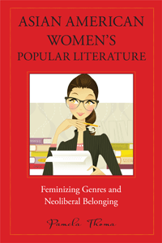

<body bgcolor="#FFFFFF" text="#000000" link="#0000FF" vlink="#CC0000" alink="#CC0000"><center><hr width="350" size="1" align="center" noshade>How Asian American women writers mobilize popular genres of literature to imagine new forms of citizenship in a neoliberal society<hr width="350" size="1" align="center" noshade><p><a href="https://cdcshoppingcart.uchicago.edu/Cart/ChicagoBook.aspx?ISBN=9781439910184&&PRESS=temple" target="_top">Buy this book!</a> | <a href="https://cdcshoppingcart.uchicago.edu/Cart/Cart.aspx?PRESS=temple" target="_top">View Cart</a> | <a href="https://cdcshoppingcart.uchicago.edu/Cart/Cart.aspx?PRESS=temple" target="_top">Check Out</a></p><p></p></center><!--none//--><h1>Asian American Women's Popular Literature</h1>
<H2>Feminizing Genres and Neoliberal Belonging</H2>
<h3>Pamela Thoma</h3>
<P>cloth 1-4399-1018-9 $85.50, Nov 13, <FONT COLOR=#990033>Available</FONT>
<br>paper 1-4399-1019-7 $27.95, Nov 13, <FONT COLOR=#990033>Available</FONT>
<br>Electronic Book 1-4399-1020-0 $26.95 <FONT COLOR=#990033>Available</FONT>
<BR> 236 pp
6x9
2&nbsp;halftones
</P><BLOCKQUOTE><I>"In </I>Asian American Women’s Popular Literature<I>, Pamela Thoma clearly and convincingly demonstrates how contemporary authors working in popular genres negotiate neoliberal conditions of cultural and political belonging. In so doing, Thoma provides a lucid account of cultural citizenship. There is much critical pleasure to be had in this book, which takes seriously novels that are often dismissed as (only) pleasure reading."</I><br>&#151<b>Crystal Parikh</b>, Associate Professor of English and Social and Cultural Analysis at New York University, and author of<I> An Ethics of Betrayal: The Politics of Otherness in Emergent U.S. Literature and Culture</I></I></BLOCKQUOTE>
<P>Popular genre fiction written by Asian American women and featuring Asian American characters gained a market presence in the late twentieth and early twenty-first centuries. These “crossover” books—mother-daughter narratives, chick lit, detective fiction, and food writing—attempt to bridge ethnic audiences and a broader reading public. In <i>Asian American Women's Popular Literature</i>, Pamela Thoma considers how these books both depict contemporary American-ness and contribute critically to public dialogue about national belonging.
<P>Novels such as Michelle Yu and Blossom Kan’s <i>China Dolls</i> and Sonia Singh’s <i>Goddess for Hire</i>, or mysteries including Sujata Massey’s <i>Girl in a Box</i> and Suki Kim’s <i>The Interpreter</i>, reveal Asian American women’s ambivalence about the trappings and prescriptions of mainstream American society. Thoma shows how these writers’ works address the various pressures on women to manage their roles in relation to family and finances—reconciling the demands of work, consumer culture, and motherhood—in a neoliberal society.
<BR>&nbsp;<h2>Excerpt</h2><P>Excerpt available at <a href="http://www.temple.edu/tempress">www.temple.edu/tempress</a></p>
<BR>&nbsp;<h2>Reviews</h2>
<p><I>"</I>Asian American Women’s Popular Literature<I> is an incisive, useful, and informative study that expands the boundaries of Asian American literary studies into popular genres that have not yet received much critical attention. Thoma’s nuanced and perceptive readings demonstrate how such genres have all been reshaped in ways both subtle and obvious by neoliberal political and cultural discourses. Her book is an exciting and relevant contribution to Asian American literary studies."</I> <br>&#151<b>Mark Chiang</b>, Associate Professor of English and Asian American Studies at University of Illinois at Chicago, and author of <I>The Cultural Capital of Asian American Studies: Autonomy and Representation in the University</I>
<p><I>"Thoma’s book moves effortlessly from close reading to wide-ranging discussions about Asian Americans, women, and neoliberalism. In the process, it draws urgent scholarly works in American literary, gender, and popular culture studies into deep conversation with each other as it offers up important contributions to all of these fields. </I>Asian American Women’s Popular Literature<I> is sure to remain influential for a long time."</I> <br>&#151<b>Min Hyoung Song</b>, Associate Professor of English at Boston College, and author of <I>The Children of 1965: On Writing, and Not Writing, as an Asian American</I>
<p><I>"[W]orth a read by anyone interested in American literature.... [T]he value of Thoma’s book [is that it] makes us think about how the authors she writes about...revivify genres and create works that make us think about the roles ethnicity, gender, societal norms and international economic structures play in individual lives and families."</I>
<br>&#151<b><I>Critical Margins</I></b>
<p><I>"[T]he significance of women’s popular fiction continues to be overlooked, if not derided outright, by many social and cultural critics. Fortunately, feminist scholars have sought to rectify this state of affairs, and </i>Asian American Women’s Popular Literature<i> by WSU associate professor Pamela Thoma is a lucid, convincing, and original contribution to the field."</I>
<br>&#151<b><I>Washington State Magazine</I></b>
<p><I>"</i>Asian American Women's Popular Literature<i> is a pleasurable read and an important contribution to recent scholarship on Asian American popular culture. As the title suggests, the book uncovers the ways in which Asian American women writers of different genres of fiction directly address Asian American women's political subjectivity and problematize contemporary reformulations of US citizenship and belonging under neoliberalism. The novel, Thoma argues, continues to be central to the development of citizen-subjects even as it now integrates with other media within neoliberal consumer culture.... </i>Asian American Women's Popular Literature<i> offers readers an impressively coherent theory of Asian American women's lowbrow literary texts and the important cultural work they do as popular texts."</I> <br>&#151<b><I>MELUS: Multi-Ethnic Literature of the United States</I></b>
<BR>&nbsp;<h2>Contents</h2><P>
<p>Acknowledgments
<br>
<br>1. Asian American Women’s Popular Literature, Neoliberalism, and Cultural Citizenship
<br>2. Asian American Mother-Daughter Narrative and the Neoliberal American Dream of Transformative Femininity
<br>3. Romancing the Self and Negotiating Postfeminist Consumer Citizenship in Asian American Women’s Labor Lit
<br>4. Neoliberal Detective Work: Uncovering Cosmopolitan Corruption in the New Economy
<br>5. Food Writing and Transnational Belonging in Global Consumer Culture
<br>6. Conclusion: Crossing Over and Going Public
<br>
<br>Notes
<br>Bibliography
<br>Index</p>
</P><BR>&nbsp;<H2>About the Author(s)</H2>
<P><b>Pamela Thoma</b> is Associate Professor of Critical Culture, Gender, and Race Studies and a member of the Graduate Faculty in American Studies at Washington State University.</P>
<BR><H2>Subject Categories</H2>
<p><A HREF="/tempress/asian_amer.html" TARGET="_top">Asian American Studies</a>
<BR><A HREF="/tempress/literature.html" TARGET="_top">Literature and Drama</a>
<BR><A HREF="/tempress/women.html" TARGET="_top">Women's Studies</a>
</p>
<p align="center"><a href="https://cdcshoppingcart.uchicago.edu/Cart/ChicagoBook.aspx?ISBN=9781439910184&&PRESS=temple" target="_top">Buy this book!</a> | <a href="https://cdcshoppingcart.uchicago.edu/Cart/Cart.aspx?PRESS=temple" target="_top">View Cart</a> | <a href="https://cdcshoppingcart.uchicago.edu/Cart/Cart.aspx?PRESS=temple" target="_top">Check Out</a></p><p><font face="Arial" size="1"><a href="copyright.html" onMouseOver="window.status='Web Copyright Policy';return true;" onMouseOut="window.status=''" title="Web Copyright Policy">&copy;</a> 2015 <a href="http://www.temple.edu" target="new" onMouseOver="window.status='Link to Temple University home page';return true;" onMouseOut="window.status=''" title="Link to Temple University home page">Temple University</a>. All Rights Reserved. http://www.temple.edu/tempress/titles/2269_reg.html</font></p>